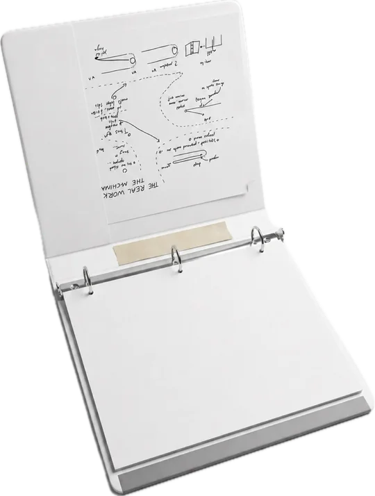
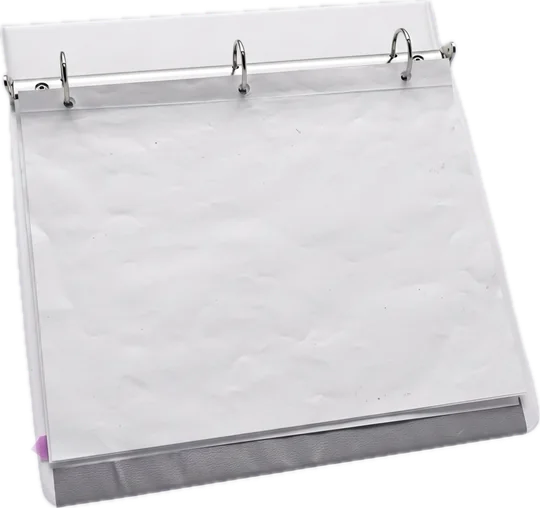
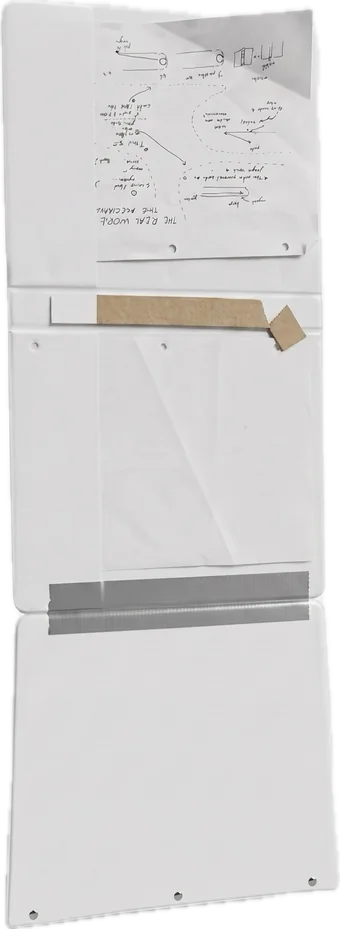
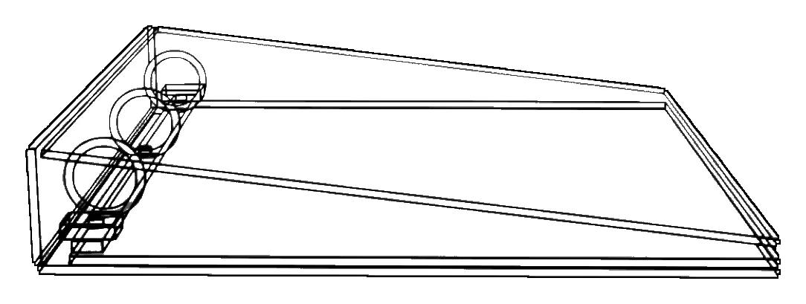

2º lugar
FounderLytics
Claridad financiera para freelancers y fundadores en 60 segundos. Contestas unas preguntas y la IA analiza tus números.

Soy Joaquín Álvarez Mercado, de Ciudad Acuña, Coahuila. Estudio tecnología y negocios en TETR y ahora estoy en India. Todo lo que ves en esta mesa lo hice yo; algunas cosas, con más gente.
Cofundador
Un movimiento ambiental que cofundé en mi ciudad, en 2024.

Juntamos a más de 50 voluntarios. Hicimos dos jornadas de limpieza y llenamos más de 44 bolsas de basura.
Con el Departamento de Ecología del municipio armamos el canje: botellas por árboles. Y dimos pláticas sobre el cuidado del agua en tres secundarias, junto con el Museo del Agua de Ciudad Acuña.
En la App Store
Una app para iOS que junta tus pendientes, tus notas y tu dinero. La diseñé, la programé y la publiqué yo solo.
FJTZ FLINT Paratu Tres nombres en un año.
El teléfono funciona. Marca un pendiente o anota un gasto. Todo se queda en tu navegador, como en Paratu, donde nada sale de tu teléfono.
sábado 27 de septiembre
Es un gran día!!!
Notas reales de mi Paratu. La de la derecha se volvió FOLIO.
Paratu
Corte de caja
Usuario más fielyo
¡Gracias por su visita!
No hizo dinero.
Es la app que uso yo.
Prototipo 1
La carpeta, pensada otra vez.
Empezó como una nota en Paratu, el 12 de abril, con foto y todo: Carpeta que no dobla las hojas.
Una carpeta normal no se queda abierta, las argollas le estorban a tu mano y las hojas se doblan. FOLIO separa las argollas del giro de las tapas.
Cerrada
Prototipo 1, hecho a mano en Ciudad Acuña.

Abierta
Se abre plana. Escribes como en un cuaderno, sin sujetarla.

Argollas aparte
Las argollas viven en su propio módulo. El metal nunca estorba tu mano.

Tres paneles
Tres paneles en cadena. Gira 360° y se vuelve compacta para escribir de pie.

Fig. 1. El mecanismo, en render. Hay una solicitud de modelo de utilidad en trámite ante el IMPI.
Todavía no se vende. Si quieres una, deja tu correo en su página.
En curso
Videos de un minuto que explican cómo funciona un negocio real.
Hablemos de negocios.
“Let's talk business.”
Cada episodio empieza igual. Esa frase no se cambia.
Un video pasó las 500 mil vistas. En el Creator Lab, la tarea de esa semana fue estudiarlo y hacer un video con mi estilo. Ver ese video en Instagram
Aquí va sin audio porque la música de fondo tiene derechos. Con sonido, en mi Instagram.
Después del primer video viral, lo desarmé en siete bloques. Siempre van en el mismo orden. Dale play al episodio de Trisol y mira cómo encajan.
Hablemos de negocios. Se tiran 40 millones de llantas al año en México. Eso es una llanta cada segundo. Y una empresa aprovecha esto para ganar dinero. Pero ¿cómo funcionó? Fue fundada por Andrés García Gasca, que fue un estudiante del Tecnológico de Monterrey al que corrieron tres veces, reprobó 12 materias y perdió a su padre mientras estudiaba. La empresa empezó como tarea, pero en 2013 empezó con tres empleados y dos máquinas de segunda mano. Funcionó porque las empresas tienen un problema y no saben qué hacer con sus llantas usadas. Las empresas le pagan a Trisol para recoger sus residuos. Trisol ya hizo dinero y ni siquiera ha hecho nada con las llantas. Después las tritura y las pasa por un proceso para convertir el hule en materia prima. Esa materia prima se vende para hacer impermeabilizantes, topes, pasto sintético, pisos de cancha u otras cosas. Trisol hace dinero con el mismo material dos veces. Un estudiante que reprobó 12 materias, con dos máquinas de segunda mano, recogiendo llantas los fines de semana en la carretera, construyó el negocio de reciclaje más eficiente de todo México. Increíble. Este fue el primer video hablando de negocios reales y cómo funcionan. Bye.
Comparo los episodios como si fueran experimentos. El de KidZania tuvo 10 mil vistas y 600 likes: 6% de engagement. El problema no fue la calidad. Fue el alcance.
Ahora grabo desde India. Aquí cada Coca-Cola trae un punto verde en la esquina, porque todo producto tiene que decir si es vegetariano. Coca-Cola tuvo que adaptarse, y por eso lleva décadas aquí.
La atención no se compra.
Se gana en los primeros segundos.
Hackathons y retos. Poco tiempo, un equipo y algo que presentar al final.
2º lugar
Claridad financiera para freelancers y fundadores en 60 segundos. Contestas unas preguntas y la IA analiza tus números.
Un agente de voz que te entrevista como lo haría un inversionista: te interrumpe, te presiona y cuenta tus muletillas mientras hablas.
Tres funciones basadas en economía conductual para que un pedido de $10 llegue a $16. Es una propuesta, con prototipo navegable.
Lo que ha pasado, de lo más nuevo a lo más viejo.
Empiezo Technology and Business Management en TETR College of Business, desde India.
Arranca Hablemos de Negocios. Un video pasa las 500 mil vistas.
FLINT se vuelve Paratu: nombre nuevo y app gratis.
FOLIO: prototipo 1 y solicitud de modelo de utilidad ante el IMPI.
El reto de Uber Eats en TETR.
Hackathon de TETR: PitchVoice.
2º lugar en la Startup Hackathon de TETR, con FounderLytics.
FJTZ se vuelve FLINT.
Mi app llega a la App Store.
Cofundo Acuña Sin Huella.
Me eligen representante estudiantil ante el Consejo Universitario de la UAdeC, una de las universidades públicas más grandes de México.
Empiezo a programar.
Disponible para proyectos
Si algo de esta mesa te dio curiosidad, escríbeme. Contesto yo.
Estoy en India.